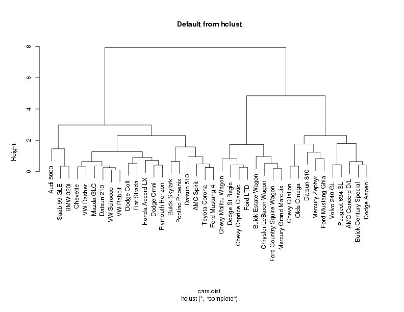
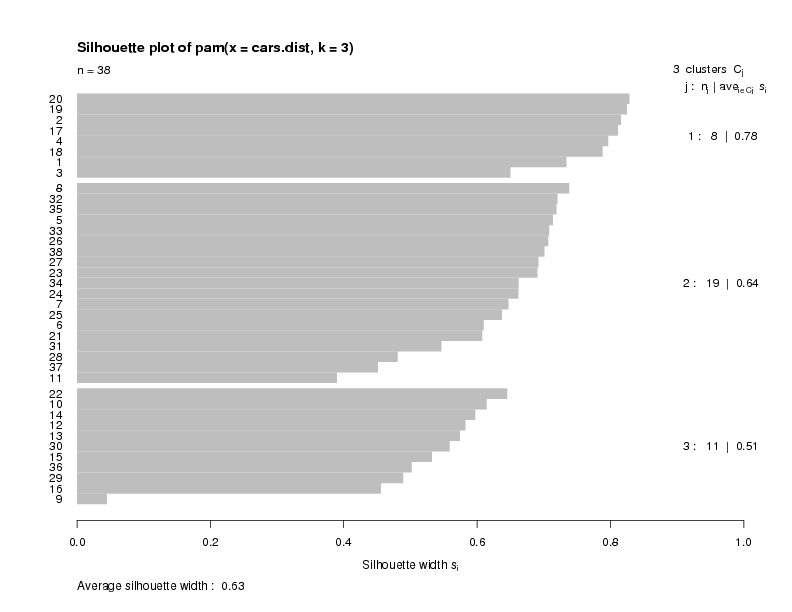
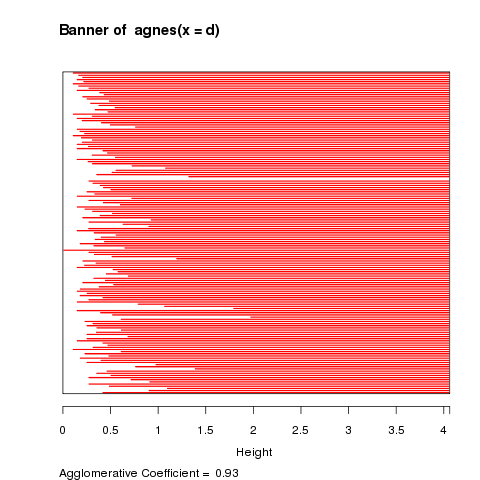
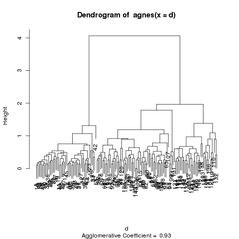
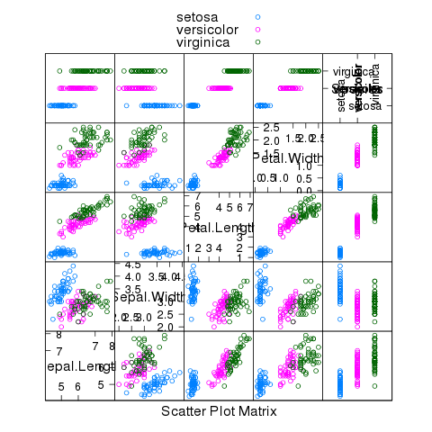

Cluster Analysis
1 Clustering Techniques
Much of the history of cluster analysis is concerned with developing algorithms that
were not too computer intensive, since early computers were not nearly as powerful as
they are today. Accordingly, computational shortcuts have traditionally been used in
many cluster analysis algorithms. These algorithms have proven to be very useful, and
can be found in most computer software.
More recently, many of these older methods have been revisited and updated to reflect
the fact that certain computations that once would have overwhelmed the available
computers can now be performed routinely. In R, a number of these updated versions of
cluster analysis algorithms are available through the cluster library, providing
us with a large selection of methods to perform cluster analysis, and the possibility of
comparing the old methods with the new to see if they really provide an advantage.
One of the oldest methods of cluster analysis is known as k-means cluster analysis, and
is available in R through the kmeans function. The
first step (and certainly not a trivial one) when using k-means cluster analysis is to
specify the number of clusters (k) that will be formed in the final solution. The process
begins by choosing k observations to serve as centers for the clusters. Then, the distance
from each of the other observations is calculated for each of the k clusters, and
observations are put in the cluster to which they are the closest. After each observation
has been put in a cluster, the center of the clusters is recalculated, and every observation
is checked to see if it might be closer to a different cluster, now that the centers have
been recalculated. The process continues until no observations switch clusters.
Looking on the good side, the k-means technique is fast, and doesn't require calculating all
of the distances between each observation and every other observation. It can be written
to efficiently deal with very large data sets, so it may be useful in cases where other
methods fail. On the down side, if you rearrange your data, it's very possible that you'll
get a different solution every time you change the ordering of your data. Another criticism
of this technique is that you may try, for example, a 3 cluster solution that seems to work
pretty well, but when you look for the 4 cluster solution, all of the structure that the
3 cluster solution revealed is gone. This makes the procedure somewhat unattractive if you
don't know exactly how many clusters you should have in the first place.
The R cluster library provides a modern alternative to k-means clustering, known
as pam, which is an acronym for "Partitioning around Medoids". The term
medoid refers to an observation within a cluster for which the sum of the distances between
it and all the other members of the cluster is a minimum. pam requires that you
know the number of clusters that you want (like k-means clustering), but it does more
computation than k-means in order to insure that the medoids it finds are truly representative
of the observations within a given cluster. Recall that in the k-means method the centers of
the clusters (which might or might not actually correspond to a particular observation) are
only recaculated after all of the observations have had a chance to move from one cluster to
another. With pam, the sums of the distances between objects within a cluster are
constantly recalculated as observations move around, which will hopefully provide a more
reliable solution. Furthermore, as a by-product of the clustering operation it identifies
the observations that represent the medoids, and these observations (one per cluster) can
be considered a representative example of the members of that cluster which may be useful in
some situations. pam does require that the entire distance matrix is calculated to
facilitate the recalculation of the medoids, and it does involve considerably more
computation than k-means, but with modern computers this may not be a important consideration.
As with k-means, there's no guarantee that the structure that's revealed with a small
number of clusters will be retained when you increase the number of clusters.
Another class of clustering methods, known as hierarchical agglomerative clustering methods,
starts out by putting each observation into its own separate cluster.
It then examines
all the distances between all the observations and pairs together the two closest ones
to form a new cluster.
This is a
simple operation, since hierarchical methods require a distance matrix, and it represents
exactly what we want - the distances between individual observations. So finding the
first cluster to form simply means looking for the smallest number in the distance matrix
and joining the two observations that the distance correspnds to into a new cluster.
Now there is one less cluster than there are observations. To
determine which observations will form the next cluster, we need to come up with a
method for finding the distance between an existing cluster and individual observations,
since once a cluster has been formed, we'll determine which observation will join it based
on the distance between the cluster and the observation.
Some of the methods that have been proposed to do this are to take the minimum distance
between an observation and any member of the cluster, to take the maximum distance, to
take the average distance, or to use some kind of measure that minimizes the distances
between observations within the cluster. Each of these methods will reveal certain types
of structure within the data. Using the minimum tends to find clusters that are drawn out
and "snake"-like, while using the maximum tends to find compact clusters. Using the
mean is a compromise between those methods. One method that tends to produce clusters
of more equal size is known as Ward's method. It attempts to form clusters keeping the
distances within the clusters as small as possible, and is often useful when the other
methods find clusters with only a few observations. Agglomerative Hierarchical cluster
analysis is provided in R through the hclust function.
Notice that, by its very nature, solutions with many clusters are nested within the
solutions that have fewer clusters, so observations don't "jump ship" as they do
in k-means or the pam methods. Furthermore, we don't need to tell these
procedures how many clusters we want - we get a complete set of solutions starting from
the trivial case of each observation in a separate cluster all the way to the other
trivial case where we say all the observations are in a single cluster.
Traditionally, hierarchical cluster analysis has taken computational shortcuts when updating
the distance matrix to reflect new clusters. In particular, when a new cluster is formed
and the distance matrix is updated, all the information about the individual members of the
cluster is discarded in order to make the computations faster. The cluster library
provides the agnes function which uses essentially the same technique as hclust,
but which uses fewer shortcuts when updating the distance matrix. For example, when the
mean method of calculating
the distance between observations and clusters is used, hclust only uses the two
observations and/or clusters which were recently merged when updating the distance matrix,
while agnes calculates those distances as the average of all the distances between
all the observations in the two clusters. While the two techniques will usually agree quite
closely when minimum or maximum updating methods are used, there may be noticeable differences
when updating using the average distance or Ward's method.
2 Hierarchial Clustering
For the hierarchial clustering methods, the dendogram is the main
graphical tool for getting insight into a cluster solution. When
you use hclust or agnes to perform a cluster analysis,
you can see the dendogram by passing the result of the clustering to
the plot function.
To illustrate interpretation of the dendogram, we'll look at a cluster
analysis performed on a set of cars from 1978-1979; the data can be found at
http://www.stat.berkeley.edu/classes/s133/data/cars.tab. Since the data
is a tab-delimited file, we use read.delim:
> cars = read.delim('cars.tab',stringsAsFactors=FALSE)
To get an idea of what information we have, let's look at the first few records;
> head(cars)
Country Car MPG Weight Drive_Ratio Horsepower
1 U.S. Buick Estate Wagon 16.9 4.360 2.73 155
2 U.S. Ford Country Squire Wagon 15.5 4.054 2.26 142
3 U.S. Chevy Malibu Wagon 19.2 3.605 2.56 125
4 U.S. Chrysler LeBaron Wagon 18.5 3.940 2.45 150
5 U.S. Chevette 30.0 2.155 3.70 68
6 Japan Toyota Corona 27.5 2.560 3.05 95
Displacement Cylinders
1 350 8
2 351 8
3 267 8
4 360 8
5 98 4
6 134 4
It looks like the variables are measured on different scales, so we will
likely want to standardize the data before proceeding. The daisy function
in the cluster library will automatically perform standardization, but it
doesn't give you complete control. If you have a particular method of standardization
in mind, you can use the scale function. You pass scale a matrix
or data frame
to be standardized, and two optional vectors. The first, called center,
is a vector of values, one for each column of the matrix or data frame to be
standardized, which will
be subtracted from every entry in that column. The second, called scale, is
similar to center, but is used to divide the values in each column. Thus,
to get z-scores, you could pass scale a vector of means for center, and
a vector of standard deviations for scale. These vectors can be created with
the apply function, that performs the same operation on each row or column of
a matrix. Suppose we want to standardize by subtracting the median and dividing by
the mean average deviation:
> cars.use = cars[,-c(1,2)]
> medians = apply(cars.use,2,median)
> mads = apply(cars.use,2,mad)
> cars.use = scale(cars.use,center=medians,scale=mads)
(The 2 used as the second argument to apply means to apply the function to
the columns of the matrix or data frame; a value of 1 means to use the rows.)
The country of origin and name of the car will not be useful in the
cluster analysis, so they have been removed. Notice that the scale
function doesn't change the order of the rows of the data frame, so it will be easy
to identify observations using the omitted columns from the original data.
First, we'll take a look at a hierarchical method, since it will provide information
about solutions with different numbers of clusters. The first step is calculating
a distance matrix.
For a data set with n observations, the distance matrix will have
n rows and n columns; the (i,j)th element of the
distance matrix will be the difference between observation i and
observation j.
There are two functions that can be used to calculate distance
matrices in R; the dist function, which is included in every version of R,
and the daisy function, which is part of the cluster library.
We'll use the dist function in this example, but you should familiarize
yourself with the daisy function (by reading its help page), since it offers
some capabilities that dist does not. Each function provides a choice of
distance metrics; in this example, we'll use the default of Euclidean distance, but
you may find that using other metrics will give different insights into the structure of
your data.
cars.dist = dist(cars.use)
If you display the distance matrix in R (for example, by typing its name),
you'll notice that only the lower triangle of the matrix is displayed. This is to
remind us that the distance matrix is symmetric, since it doesn't matter which
observation we consider first when we calculate a distance. R takes advantage of this
fact by only storing the lower triangle of the distance matrix. All of the clustering
functions will recognize this and have no problems, but if you try to access the
distance matrix in the usual way (for example, with subscripting), you'll see an
error message. Thus, if you need to use the distance matrix with anything other than
the clustering functions, you'll need to use as.matrix to convert it to a
regular matrix.
To get started, we'll use the hclust method; the cluster library
provides a similar function, called agnes to perform hierarchical cluster
analysis.
> cars.hclust = hclust(cars.dist)
Once again, we're using the default method of hclust, which is
to update the distance matrix using what R calls "complete" linkage. Using this
method, when a cluster is formed, its distance to other objects is computed as
the maximum distance between any object in the cluster and the other object. Other
linkage methods will provide different solutions, and should not be ignored. For
example, using method=ward tends to produce clusters of fairly equal size,
and can be useful when other methods find clusters that contain just a few observations.
Now that we've got a cluster solution (actually a collection of cluster solutions),
how can we examine the results? The main graphical tool for looking at a
hierarchical cluster solution is known as a dendogram. This is a tree-like display
that lists the objects which are clustered along the x-axis, and the distance at
which the cluster was formed along the y-axis.
(Distances along the x-axis are meaningless in a dendogram; the observations are
equally spaced to make the dendogram easier to read.)
To create a dendogram from a cluster
solution, simply pass it to the plot function. The result is displayed
below.
plot(cars.hclust,labels=cars$Car,main='Default from hclust')

If you choose any height along the y-axis of the dendogram, and move across the
dendogram counting the number of lines that you cross, each line represents a
group that was identified when objects were joined together into clusters. The
observations in that group are represented by the branches of the dendogram that
spread out below the line. For example, if we look at a height of 6, and move
across the x-axis at that height, we'll cross two lines. That defines a two-cluster
solution; by following the line down through all its branches, we can see the names
of the cars that are included in these two clusters. Since the y-axis represents
how close together observations were when they were merged into clusters, clusters
whose branches are very close together (in terms of the heights at which they were
merged) probably aren't very reliable. But if there's a big difference
along the y-axis
between
the last merged cluster and the currently merged one, that indicates that the
clusters formed are probably doing a good job in showing us the structure of the
data. Looking at the dendogram for the car data, there are clearly two very
distinct groups; the right hand group seems to consist of two more distinct
cluster, while most of the observations in the left hand group are clustering together
at about the same height
For this data set, it looks like
either two or three groups might be an interesting place to start investigating.
This is not to imply that looking at solutions with more clusters would
be meaningless, but the data seems to suggest that two or three clusters might be
a good start. For a problem of this size, we can see the names of the cars, so we
could start interpreting the results immediately from the dendogram, but when there
are larger numbers of observations, this won't be possible.
One of the first things we can look at is how many cars are in each of the groups.
We'd like to do this for both the two cluster and three cluster solutions. You can
create a vector showing the cluster membership of each observation by using the
cutree function. Since the object returned by a hierarchical cluster
analysis contains information about solutions with different numbers of clusters,
we pass the cutree function the cluster object and the number of clusters
we're interested in. So to get cluster memberships for the three cluster solution,
we could use:
> groups.3 = cutree(cars.hclust,3)
Simply displaying the group memberships isn't that revealing. A good
first step is to use the table function to see how many observations
are in each cluster. We'd like a solution where there aren't too many clusters
with just a few observations, because it may make it difficult to interpret our
results. For the three cluster solution, the distribution among the clusters looks
good:
> table(groups.3)
groups.3
1 2 3
8 20 10
Notice that you can get this information for many different groupings
at once by combining the calls to cutree and table in a call
to sapply. For example, to see the sizes of the clusters for solutions
ranging from 2 to 6 clusters, we could use:
> counts = sapply(2:6,function(ncl)table(cutree(cars.hclust,ncl)))
> names(counts) = 2:6
> counts
$"2"
1 2
18 20
$"3"
1 2 3
8 20 10
$"4"
1 2 3 4
8 17 3 10
$"5"
1 2 3 4 5
8 11 6 3 10
$"6"
1 2 3 4 5 6
8 11 6 3 5 5
To see which cars are in which clusters, we can use subscripting on the
vector of car names to choose just the observations from a particular cluster.
Since we used all of the observations in the data set to form the distance
matrix, the ordering of the names in the original data will coincide with the
values returned by cutree. If observations were removed from the data
before the distance matrix is computed, it's important to remember to make the
same deletions in the vector from the original data set that will be used to
identify observations. So, to see which cars were in the first cluster for the
four cluster solution, we
can use:
> cars$Car[groups.3 == 1]
[1] Buick Estate Wagon Ford Country Squire Wagon
[3] Chevy Malibu Wagon Chrysler LeBaron Wagon
[5] Chevy Caprice Classic Ford LTD
[7] Mercury Grand Marquis Dodge St Regis
As usual, if we want to do the same thing for all the groups at once,
we can use sapply:
> sapply(unique(groups.3),function(g)cars$Car[groups.3 == g])
[[1]]
[1] Buick Estate Wagon Ford Country Squire Wagon
[3] Chevy Malibu Wagon Chrysler LeBaron Wagon
[5] Chevy Caprice Classic Ford LTD
[7] Mercury Grand Marquis Dodge St Regis
[[2]]
[1] Chevette Toyota Corona Datsun 510 Dodge Omni
[5] Audi 5000 Saab 99 GLE Ford Mustang 4 Mazda GLC
[9] Dodge Colt AMC Spirit VW Scirocco Honda Accord LX
[13] Buick Skylark Pontiac Phoenix Plymouth Horizon Datsun 210
[17] Fiat Strada VW Dasher BMW 320i VW Rabbit
[[3]]
[1] Volvo 240 GL Peugeot 694 SL Buick Century Special
[4] Mercury Zephyr Dodge Aspen AMC Concord D/L
[7] Ford Mustang Ghia Chevy Citation Olds Omega
[10] Datsun 810
We could also see what happens when we use the four cluster solution
> groups.4 = cutree(cars.hclust,4)
> sapply(unique(groups.4),function(g)cars$Car[groups.4 == g])
[[1]]
[1] Buick Estate Wagon Ford Country Squire Wagon
[3] Chevy Malibu Wagon Chrysler LeBaron Wagon
[5] Chevy Caprice Classic Ford LTD
[7] Mercury Grand Marquis Dodge St Regis
[[2]]
[1] Chevette Toyota Corona Datsun 510 Dodge Omni
[5] Ford Mustang 4 Mazda GLC Dodge Colt AMC Spirit
[9] VW Scirocco Honda Accord LX Buick Skylark Pontiac Phoenix
[13] Plymouth Horizon Datsun 210 Fiat Strada VW Dasher
[17] VW Rabbit
[[3]]
[1] Audi 5000 Saab 99 GLE BMW 320i
[[4]]
[1] Volvo 240 GL Peugeot 694 SL Buick Century Special
[4] Mercury Zephyr Dodge Aspen AMC Concord D/L
[7] Ford Mustang Ghia Chevy Citation Olds Omega
[10] Datsun 810
The new cluster can be recognized as the third group in the above output.
Often there is an auxiliary variable in the original data set that was not included
in the cluster analysis, but may be of interest. In fact, cluster analysis is
sometimes performed to see if observations naturally group themselves in accord with
some already measured variable. For this data set, we could ask whether the clusters
reflect the country of origin of the cars, stored in the variable Country
in the original data set. The table function can be used, this time
passing two arguments, to produce a cross-tabulation of cluster group membership
and country of origin:
> table(groups.3,cars$Country)
groups.3 France Germany Italy Japan Sweden U.S.
1 0 0 0 0 0 8
2 0 5 1 6 1 7
3 1 0 0 1 1 7
>
Of interest is the fact that all of the cars in cluster 1 were manufactured in
the US. Considering the state of the automobile industry in 1978, and the cars
that were identified in cluster 1, this is not surprising.
In an example like this, with a small number of observations, we can often
interpret the cluster solution directly by looking at the labels of the observations
that are in each cluster. Of course, for larger data sets, this will be impossible
or meaningless. A very useful method for characterizing clusters is to look at
some sort of summary statistic, like the median, of the variables that were used
to perform the cluster analysis, broken down by the groups that the cluster analysis
identified. The aggregate function is well suited for this task, since it
will perform summaries on many variables simultaneously. Let's look at the median
values for the variables we've used in the cluster analysis, broken up by the cluster
groups. One oddity of the aggregate function is that it demands that the
variable(s) used to divide up the data are passed to it in a list, even if there's
only one variable:
> aggregate(cars.use,list(groups.3),median)
Group.1 MPG Weight Drive_Ratio Horsepower Displacement Cylinders
1 1 -0.7945273 1.5051136 -0.9133729 1.0476133 2.4775849 4.7214353
2 2 0.6859228 -0.5870568 0.5269459 -0.6027364 -0.5809970 -0.6744908
3 3 -0.4058377 0.5246039 -0.1686227 0.3587717 0.3272282 2.0234723
If the ranges of these numbers seem strange, it's because we standardized
the data before performing the cluster analysis. While it is usually more
meaningful to look at the variables in their original scales, when data is
centered, negative values mean "lower than most" and positive values mean
"higher than most". Thus, group 1 is cars with relatively low MPG,
high weight, low drive ratios, high horsepower and displacement, and more than
average number of cylinders. Group 2 are cars with high gas mileage, and low weight
and horsepower; and group 3 is similar to group 1.
It may be easier to understand the groupings if we look at the variables in their
original scales:
> aggregate(cars[,-c(1,2)],list(groups.3),median)
Group.1 MPG Weight Drive_Ratio Horsepower Displacement Cylinders
1 1 17.30 3.890 2.430 136.5 334 8
2 2 30.25 2.215 3.455 79.0 105 4
3 3 20.70 3.105 2.960 112.5 173 6
It may also be useful to add the numbers of observations in each group to the
above display. Since aggregate returns a data frame, we can manipulate
it in any way we want:
> a3 = aggregate(cars[,-c(1,2)],list(groups.3),median)
> data.frame(Cluster=a3[,1],Freq=as.vector(table(groups.3)),a3[,-1])
Cluster Freq MPG Weight Drive_Ratio Horsepower Displacement Cylinders
1 1 8 17.30 3.890 2.430 136.5 334 8
2 2 20 30.25 2.215 3.455 79.0 105 4
3 3 10 20.70 3.105 2.960 112.5 173 6
To see how the four cluster solution differed from the three cluster solution,
we can perform the same analysis for that solution:
> a4 = aggregate(cars[,-c(1,2)],list(groups.4),median)
> data.frame(Cluster=a4[,1],Freq=as.vector(table(groups.4)),a4[,-1])
Cluster Freq MPG Weight Drive_Ratio Horsepower Displacement Cylinders
1 1 8 17.3 3.890 2.43 136.5 334 8
2 2 17 30.9 2.190 3.37 75.0 98 4
3 3 3 21.5 2.795 3.77 110.0 121 4
4 4 10 20.7 3.105 2.96 112.5 173 6
The main difference seems to be that the four cluster solution recognized a
group of cars that have higher horsepower and drive ratios than the other
cars in the cluster they came from.
3 PAM: Partitioning Around Medoids
Unlike the hierarchical clustering methods, techniques like k-means cluster analysis
(available through the kmeans function) or
partitioning around mediods (avaiable through the pam function
in the cluster library) require that we specify
the number of clusters that will be formed in advance. pam offers some
additional diagnostic information about a clustering solution, and provides a nice
example of an alternative technique to hierarchical clustering. To use pam,
you must first load the cluster library. You can pass pam a
data frame or a distance matrix; since we've already formed the distance matrix,
we'll use that.
pam
also needs the number of clusters you wish to form. Let's look at the three cluster
solution produced by pam:
> library(cluster)
> cars.pam = pam(cars.dist,3)
First of all, let's see if the pam solution agrees with the hclust
solution. Since pam only looks at one cluster solution at a time, we don't
need to use the cutree function as we did with hclust; the cluster
memberships are stored in the clustering component of the pam
object; like most R objects, you can use the names function to see what
else is available. Further information can be found in the help page for
pam.object.
> names(cars.pam)
[1] "medoids" "id.med" "clustering" "objective" "isolation"
[6] "clusinfo" "silinfo" "diss" "call"
We can use table to compare the results of the hclust
and pam solutions:
> table(groups.3,cars.pam$clustering)
groups.3 1 2 3
1 8 0 0
2 0 19 1
3 0 0 10
The solutions seem to agree, except for 1 observations that hclust put
in group 2 and pam put in group 3. Which observations was it?
> cars$Car[groups.3 != cars.pam$clustering]
[1] Audi 5000
Notice how
easy it is to get information like this due to the power of R's subscripting
operations.
One novel feature of pam is that it finds observations from the original
data that are typical of each cluster in the sense that they are closest to the
center of the cluster. The indexes of the medoids are stored in the id.med
component of the pam object, so we can use that component as a subscript
into the vector of car names to see which ones were selected:
> cars$Car[cars.pam$id.med]
> cars$Car[cars.pam$id.med]
[1] Dodge St Regis Dodge Omni Ford Mustang Ghia
Another feature available with pam is a plot known as a silhouette plot.
First, a measure is calculated for each observation to see how well it fits into
the cluster that it's been assigned to. This is done by comparing how close
the object is to other objects in its own cluster with how close it is to objects
in other clusters. (A complete description can be found in the help page for
silhouette.) Values near one mean that the observation is well placed in
its cluster; values near 0 mean that it's likely that an observation might
really belong in some other cluster. Within each cluster, the value for this measure
is displayed from smallest to largest. If the silhouette plot shows values close to
one for each observation, the fit was good; if there are many observations closer to
zero, it's an indication that the fit was not good. The sihouette plot is very useful
in locating groups in a cluster analysis that may not be doing a good job; in turn
this information can be used to help select the proper number of clusters. For the
current example, here's the silhouette plot for the three cluster pam solution,
produced by the command
> plot(cars.pam)

The plot indicates that there is a good structure to the clusters, with most
observations seeming to belong to the cluster that they're in.
There is a summary measure at the bottom of the plot
labeled "Average Silhouette Width". This table shows how to use the value:
| Range of SC | Interpretation |
| 0.71-1.0 | A strong structure has been found |
| 0.51-0.70 | A reasonable structure has been found |
| 0.26-0.50 | The structure is weak and could be artificial |
| < 0.25 | No substantial structure has been found |
To create a silhouette plot for a particular solution derived from a hierarchical
cluster analysis, the silhouette function can be used. This function
takes the appropriate output from cutree along with the distance matrix
used for the clustering. So to produce a silhouette plot for our 4 group
hierarchical cluster (not shown), we could use the following statements:
plot(silhouette(cutree(cars.hclust,4),cars.dist))
4 AGNES: Agglomerative Nesting
As an example of using the agnes function from the cluster package,
consider the famous Fisher iris data, available as the dataframe iris in R.
First let's look at some of the data:
> head(iris)
Sepal.Length Sepal.Width Petal.Length Petal.Width Species
1 5.1 3.5 1.4 0.2 setosa
2 4.9 3.0 1.4 0.2 setosa
3 4.7 3.2 1.3 0.2 setosa
4 4.6 3.1 1.5 0.2 setosa
5 5.0 3.6 1.4 0.2 setosa
6 5.4 3.9 1.7 0.4 setosa
We will only consider the numeric variables in the cluster analysis.
As mentioned previously, there are two functions to compute the
distance matrix: dist and daisy. It should be
mentioned that for data that's all numeric, using the function's
defaults, the two methods will give the same answers. We can
demonstrate this as follows:
> iris.use = subset(iris,select=-Species)
> d = dist(iris.use)
> library(cluster)
> d1 = daisy(iris.use)
> sum(abs(d - d1))
[1] 1.072170e-12
Of course, if we choose a non-default metric for
dist, the answers will be different:
> dd = dist(iris.use,method='manhattan')
> sum(abs(as.matrix(dd) - as.matrix(d1)))
[1] 38773.86
The values are very different!
Continuing with the cluster example, we can calculate
the cluster solution as follows:
> z = agnes(d)
The plotting method for agnes objects presents two
different views of the cluster solution. When we plot such
an object, the plotting function sets the graphics
parameter ask=TRUE, and the following appears in your
R session each time a plot is to be drawn:
Hit <Return> to see next plot:
If you know you want a particular plot, you can pass the
which.plots= argument an integer telling which
plot you want.
The first plot that is displayed is known as a banner plot.
The banner plot for the iris data is shown below:

The white area on the left of the banner plot represents the
unclustered data while the white lines that stick into the
red are show the heights at which the clusters were formed.
Since we don't want to include too many clusters that joined
together at similar heights, it looks like three clusters,
at a height of about 2 is a good solution. It's clear from
the banner plot that if we lowered the height to, say 1.5,
we'd create a fourth cluster with only a few observations.
The banner plot is just an alternative to the dendogram, which
is the second plot that's produced from an agnes object:

The dendogram shows the same relationships, and it's a matter
of individual preference as to which one is easier to use.
Let's see how well the clusters do in grouping the irises by species:
> table(cutree(z,3),iris$Species)
setosa versicolor virginica
1 50 0 0
2 0 50 14
3 0 0 36
We were able to classify all the setosa and versicolor varieties correctly.
The following plot gives some insight into why we were so successful:
> splom(~iris,groups=iris$Species,auto.key=TRUE)

File translated from
TEX
by
TTH,
version 3.67.
On 16 Mar 2011, 15:27.